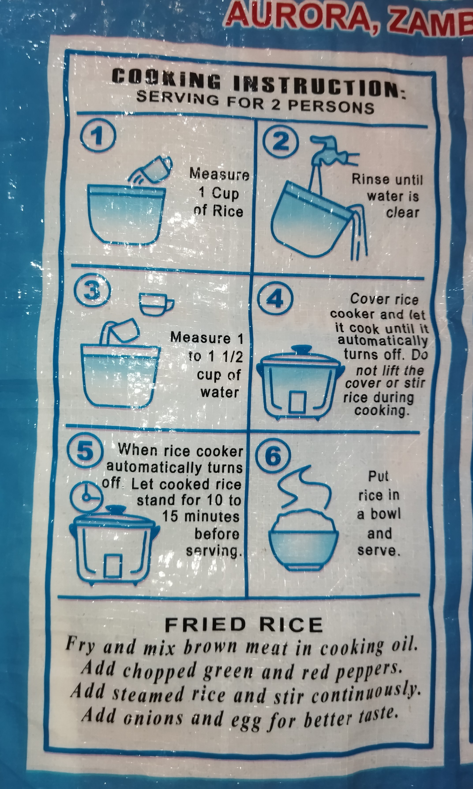

Hope Special Stoneless Rice Sack



Cooking Instructions: (Serving for 2 persons)
- Measure 1 cup of Rice.
- Rinse until water is clear.
- Measure 1 to 1 1/2 cups of water.
- Cover rice cooker and let it cook until it automatically turns off. Do not lift the cover or stir rice during cooking.
- When rice cooker automatically turns off. Let cooked rice stand for 10 to 15 minutes before serving.
- Put rice in a rice bowl and serve.